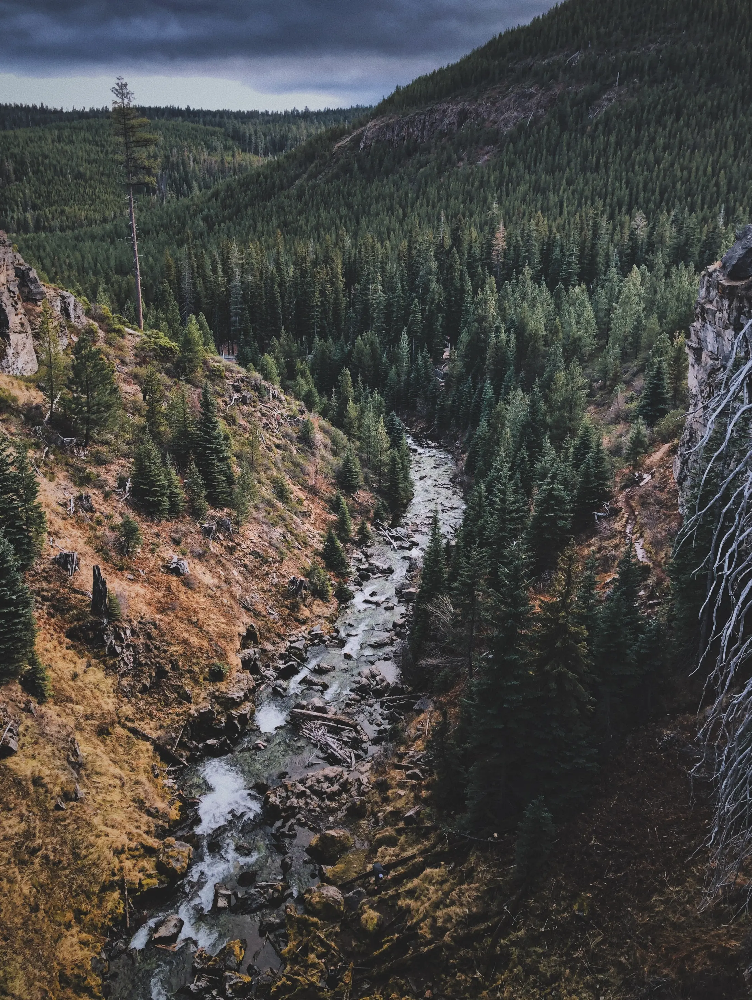
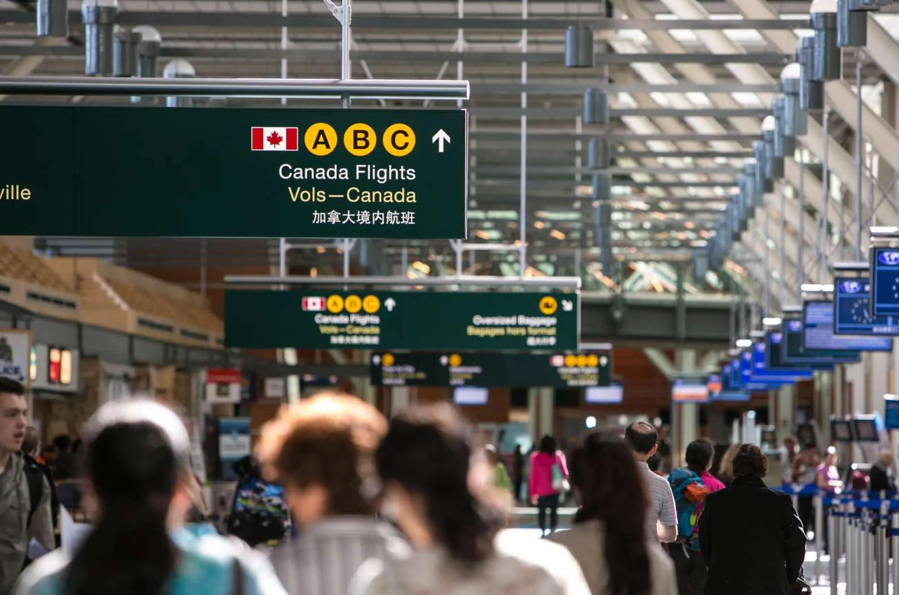
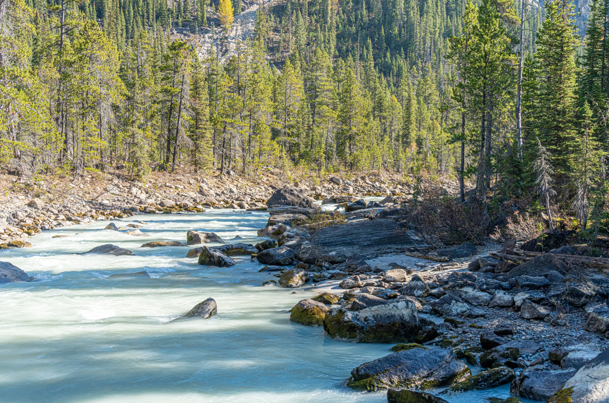
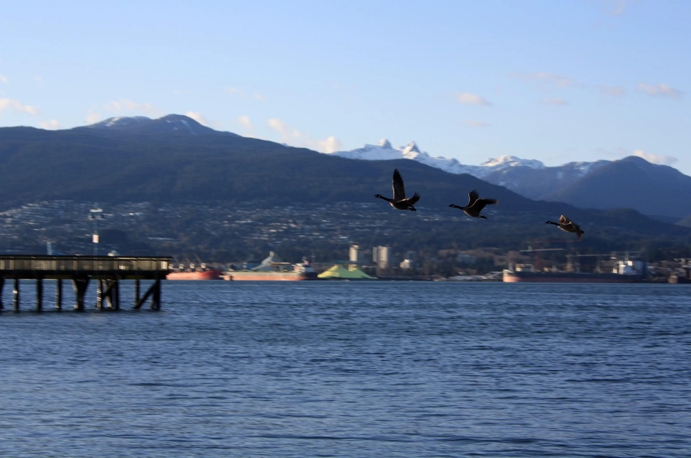
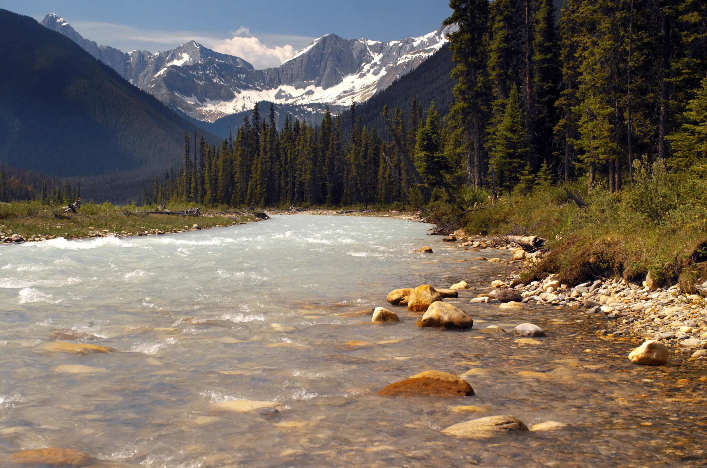
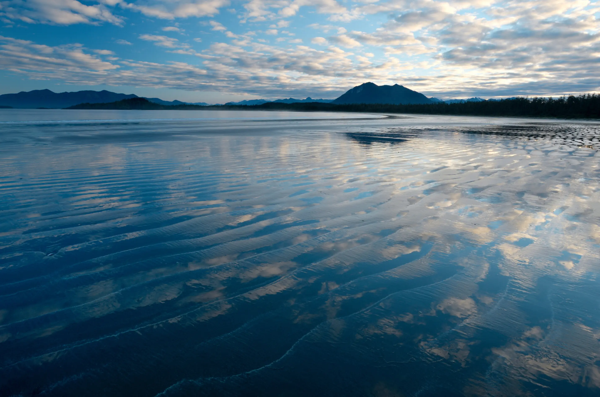
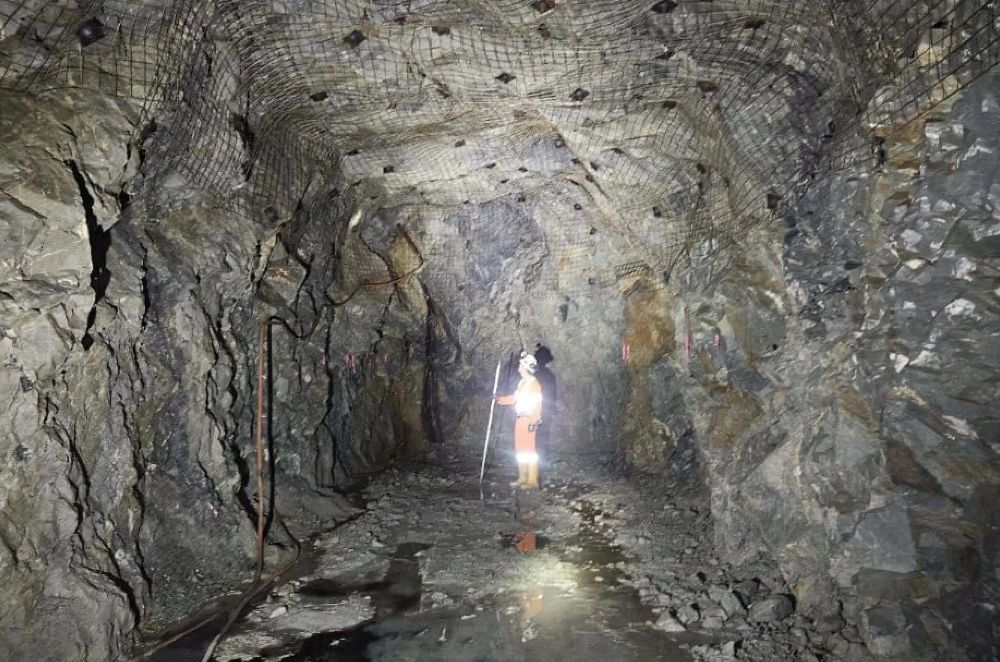

Over 50 Years of
Environmental Expertise
From wildlife and fisheries studies in the 1970s to contaminated site work today, ENTECH has been part of British Columbia’s environmental story since 1973.
One of British Columbia’s longest-established environmental consulting firms
Established in 1973, ENTECH Environmental Consultants Ltd. brings over five decades of experience in environmental science, resource management, environmental assessments, and contaminated site investigations.
Founded in British Columbia, ENTECH began its operations during a period of growing awareness surrounding environmental protection and the importance of understanding the impacts of industrial development on natural ecosystems.
During its early years, ENTECH undertook environmental studies involving wildlife habitats, fisheries, aquatic ecosystems, and major infrastructure development, including investigations associated with Vancouver International Airport, the Fraser River estuary, the Columbia Wetlands, and the Kootenay River.
Over the following decades, the company’s expertise expanded into aquaculture development, environmental monitoring, mining-related environmental assessments, natural resource management, and consulting for both public and private sector clients, including the assessment of sustainable fisheries and aquaculture initiatives.
Today, ENTECH continues to provide environmental consulting services throughout British Columbia, focused on environmental site assessments, contaminated site investigations, soil and groundwater remediation, petroleum storage tank investigations, and regulatory reporting, combining decades of technical experience with practical, hands-on field expertise.

50
Years of reliable, cost-effective environmental solutions tailored to each project
1973
ENTECH is founded in British Columbia
Early years
Wildlife, fisheries and aquatic studies at YVR, the Fraser River estuary, Columbia Wetlands and Kootenay River
Following decades
Expansion into aquaculture, environmental monitoring, mining assessments and resource management
Today
Site assessments, contaminated sites, remediation, storage tanks and regulatory reporting across BC
A Legacy of Environmental Projects
Throughout its history, ENTECH has provided environmental consulting services for government agencies, public utilities, resource development companies, and environmental management initiatives.

Vancouver International Airport Expansion
Environmental investigations for the proposed expansion of Vancouver International Airport, assessing potential impacts on wildlife populations, migratory bird habitats and sensitive wetland ecosystems within the Fraser River estuary.

Kootenay River Diversion — Environmental Evaluation
An Initial Environmental Evaluation of BC Hydro’s proposed hydroelectric diversion, examining aquatic ecosystems, fish and wildlife habitats and water resources, and identifying measures to minimize environmental disturbance.

Columbia Wetlands — Fisheries & Ecological Investigations
Fisheries and ecological studies of freshwater habitats, fish populations and wetlands throughout the Columbia River Valley, supporting regional assessments and planning for proposed water development projects.

Clayoquot Sound — Aquaculture & Fisheries Development
A study of sustainable aquaculture and fisheries opportunities on the west coast of Vancouver Island, showing how they could support local economies while protecting Clayoquot Sound’s coastal and marine environments.

Burrard Inlet — Monitoring Program Evaluation
An inventory and evaluation of 80 monitoring programs carried out between 1985 and 1991, identifying information gaps and supporting more integrated monitoring strategies for Burrard Inlet.

Treasure Mountain Silver Mining Project
Working alongside AMEC and Jasman Yee & Associates, ENTECH supervised testing of mine tailings for physical and chemical characteristics, acid generation potential and water quality implications, supporting tailings management and permitting.
Additional Historical
Projects
ENTECH’s work has also reached beyond British Columbia.
- Vietnam — Aquaculture Industry Development
- Saudi Arabia — Geothermal Water Intake & Outflow Solutions
- Gulf of Georgia Cannery — Restoration Project
- First Nations Aquaculture Development Projects
- Additional Mining Projects in Northern BC
Have a project in mind?
Tell us about your property or development and we’ll get back to you to discuss next steps.